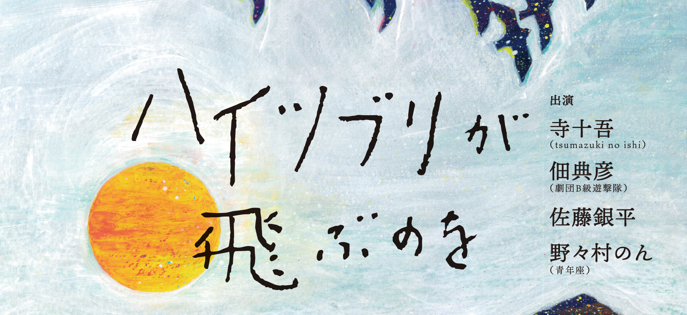

なないろ満月 vol.3
「ハイツブリが飛ぶのを」
| 作 | 横山拓也(iaku) |
| 演出 | 五十嵐明(青年座) |
九州南部で破局的なカルデラ噴火が起こった後の世界。
ハイツブリが越冬のため渡ってくる渡ヶ丘の、小さな仮設住宅で、女は一人待っていた。
そこに現れる男。
大切な人を失い、それでも何かをたよりに生きていこうとする・・・
第72回文化庁芸術祭新人賞 関西上演の部 [脚本横山拓也]受賞作品
テアトルBONBON 2032 10.4 （水）-9（月・祝）